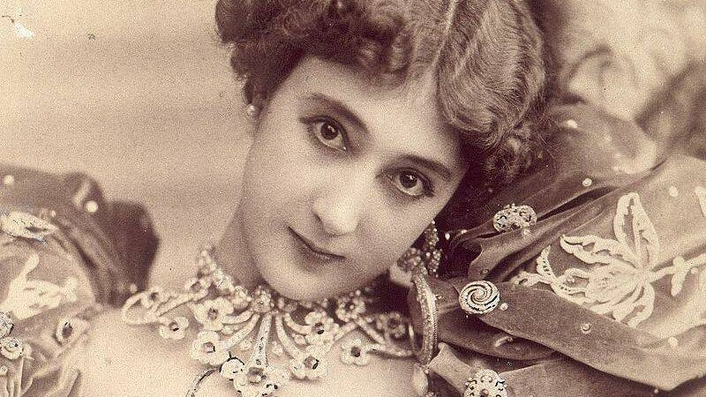
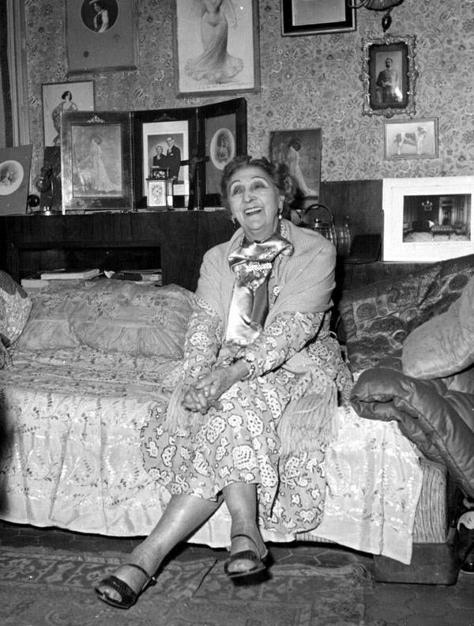
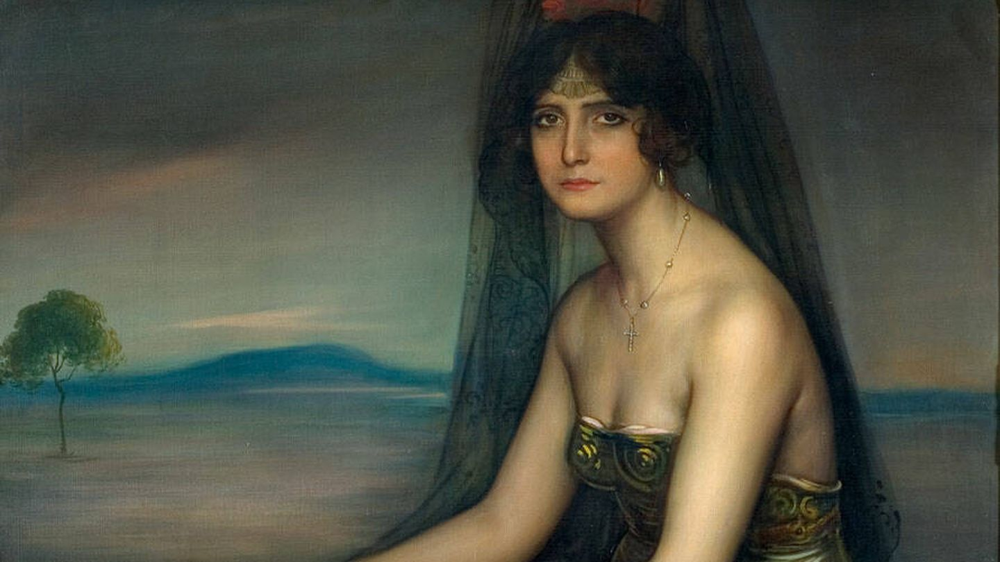
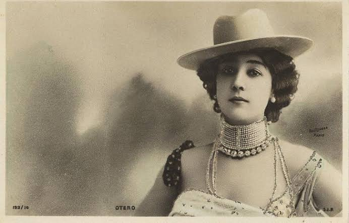

Iconas
A Bella Otero




Ficha rápida da icona
- Nome: Agustina Otero Iglesias
- Nome artístico: A Bella Otero
- Nacemento: Valga (Pontevedra), 1868
- Falecemento: Niza (Francia), 12 de abril de 1965
- Profesión: Bailarina, cantante e cortesá
- Época: Belle Époque
- Coñecida por: Converterse nunha das figuras máis fascinantes e misteriosas da Belle Époque europea.
A icona en si
Cada vez que vexo a Carol bailar penso no fácil que é notar cando alguén ten presenza no escenario. Non sei explicar moi ben que é, pero hai persoas que saen ao escenario e conseguen que mires para elas todo o rato. Lendo sobre a Bella Otero acordeime da miña irmá.
A Bella Otero naceu en Valga en 1868 co nome de Agustina Otero Iglesias. A súa infancia estivo marcada pola pobreza e por unha agresión que lle cambiou a vida para sempre. Sendo moi nova marchou de Galicia e decidiu deixar atrás o seu pasado, cambiando incluso o seu nome por Carolina. A partir de aí empezou a inventar unha versión nova de si mesma. Empezou a "performar".
Foi en París onde comezou a construír a lenda. Actuou nos cabarets da cidade ata converterse nunha das grandes estrelas do Folies Bergère, un dos teatros máis importantes da época. Facíase pasar por unha bailarina andaluza de orixe xitana e dicía que o seu pai era aristócrata. Nada diso era certo, pero funcionou. O público quedou fascinado con ela e coa historia que creara arredor da súa vida.
Durante anos viviu rodeada de luxo, viaxou por toda Europa e relacionouse con reis, empresarios e aristócratas. Porén, a súa adicción ao xogo fixo que perdese gran parte da fortuna que conseguira e rematou vivindo de maneira moito máis humilde en Niza, onde faleceu en 1965, aos 96 anos.
O que máis me chama a atención da súa historia é ese contraste. Pasou dunha infancia durísima a ser unha das mulleres máis coñecidas da súa época e, despois de ter unha fortuna, acabou practicamente sen nada. Pero o nome da Bella Otero quedou para sempre. Carol e ela comparten algo que eu recoñezo enseguida: cando bailan, miras e quedas prendada.
Bibliografía
Amil, I. F. (2022, 10 abril). La Bella Otero, la gallega más deseada de todos los tiempos. El Español.
https://www.elespanol.com/quincemil/cultura/historias-de-la-historia/20220410/bella-otero-gallega-deseada-tiempos/663933812_0.html
Baciero, C. A. (2020, 19 decembro). La trágica vida de la Bella Otero, el icono de la Belle Époque que afirmó haber seducido a seis monarcas y murió arruinada. Vanity Fair.
https://www.revistavanityfair.es/realeza/articulos/bella-otero-vida-historia/48041
Colaboradores de Wikipedia. (2025, 6 maio). La Bella Otero. Wikipedia, la Enciclopedia Libre.
https://es.wikipedia.org/wiki/La_Bella_Otero
De Paz Eduardo, V. T. L. E. (2025, 20 xuño). Carolina Otero – La Bella Otero, mito de la Belle Époque. La Pequeña España París.
https://lapequenaespanaparis.org/2025/06/04/carolina-otero-la-bella-otero-mito-de-la-belle-epoque/
La Bella Otero. FilmAffinity.
https://www.filmaffinity.com/es/film687278.html